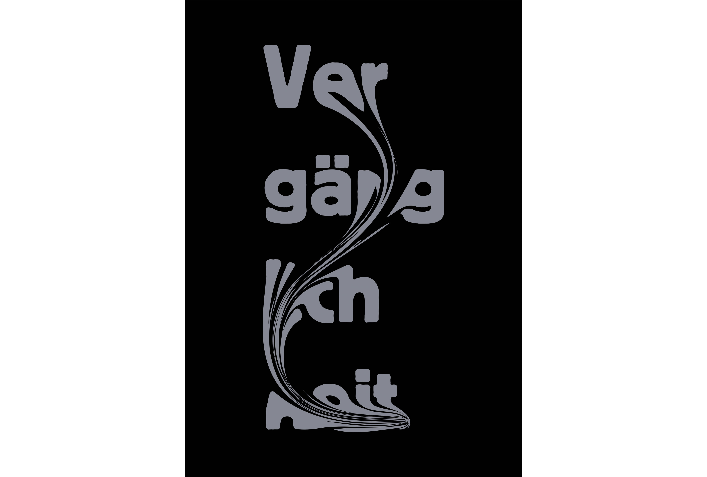
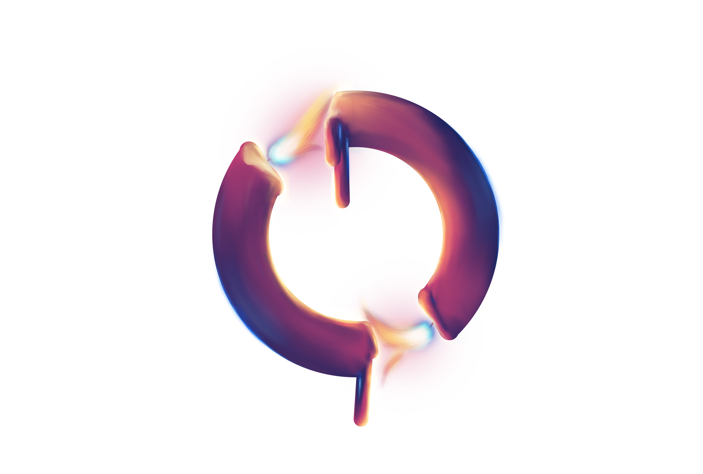
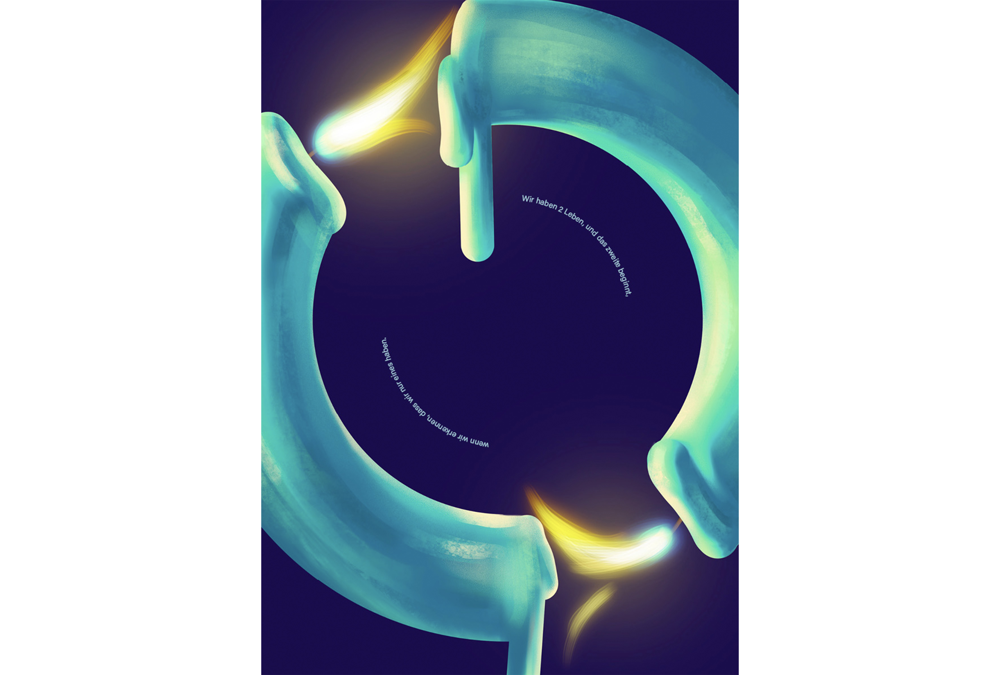
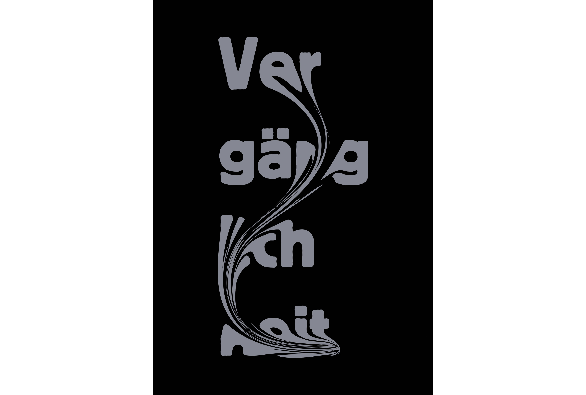
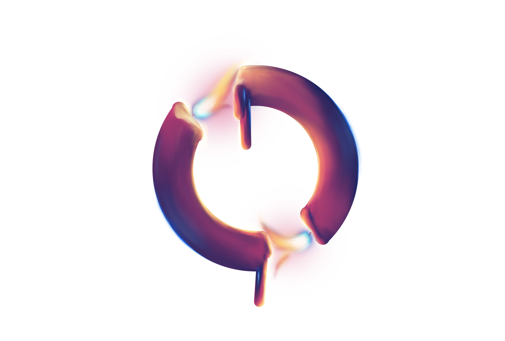
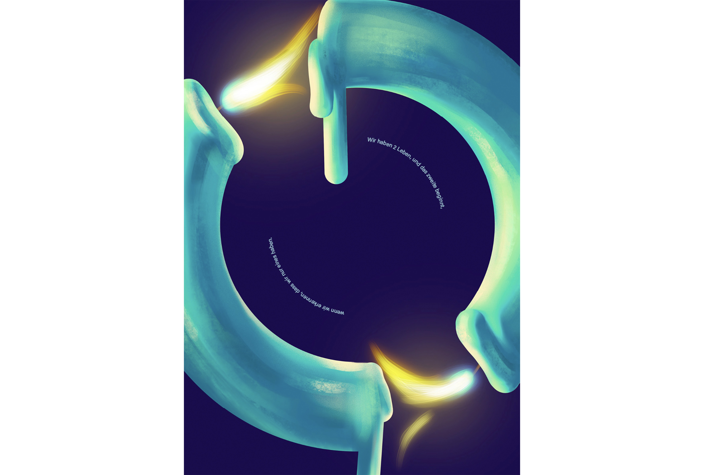

Zwei Leben
Wie einst Konfuzius formulierte: «Wir haben zwei Leben, und das zweite beginnt, wenn wir erkennen, dass wir nur eines haben.» Dieser Gedanke bildet den Ausgangspunkt des Projekts und dient als zentrales Motiv. Er lädt zum Innehalten ein und führt unmittelbar zur Auseinandersetzung mit dem Thema Vergänglichkeit. Ausgangspunkt war ein fotografisches Motiv: eine Kerze kurz vor dem Erlöschen – ein Sinnbild für das Ende eines Moments und gleichzeitig die Endlichkeit des Lebens. Dieses Symbol wurde weitergedacht und für die Plakatgestaltung transformiert mit dem Ziel, Vergänglichkeit visuell erfahrbar zu machen und beim Betrachtenden einen Moment der Reflexion auszulösen. Im Prozess wurde insbesondere im illustrativen Bereich experimentiert. In Procreate entstand die Darstellung zweier Kerzen, die sich plastisch aus dem Raum herausentwickeln und den Eindruck einer greifbaren, dreidimensionalen Form erzeugt. Die Typografie wurde diagonal über das Format gesetzt, um Spannung aufzubauen So entsteht ein Zusammenspiel zwischen Bild und Schrift, welches das Thema zugleich reduziert, verdichtet und emotional zugänglich macht.